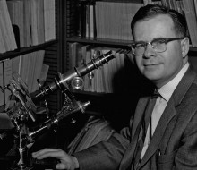

Please note: the AAS Obituaries are temporarily being hosted on this website while their full content is being ingested into the PubPub publishing platform newly adopted by the Bulletin of the American Astronomical Society. When the migration is complete, your existing links will take you to the final, migrated content. Contact peter.williams@aas.org with any questions.
William P. Bidelman (1918-2011)
William P. Bidelman passed away on 2011 May 3, at the age of 92. He was one of the last of the masters of visual stellar spectral classification and the identification of peculiar stars. His discoveries included barium stars, hydrogen-deficient stars, high-galactic-latitude supergiants, stars with anomalous carbon content, and exotic chemical abundances in peculiar A and B stars. Bidelman was legendary for his encyclopedic knowledge of the stellar literature. He had a profound and inspirational influence on many colleagues and students. Some of the bizarre stellar phenomena he discovered remain unexplained to the present day.
A full-length obituary will be published in PASP, of which Bidelman was Editor from 1956 to 1961.
Obituary written by: Howard Bond
Additional links:
BAAS Citation: BAAS, 2019, 51, 0310
SAO/NASA ADS Bibcode: 2019BAAS...51b0310B